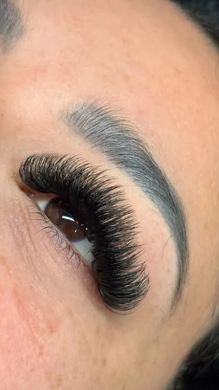
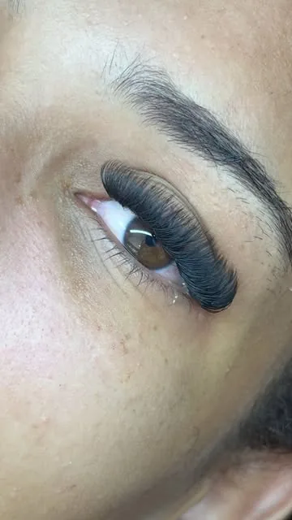
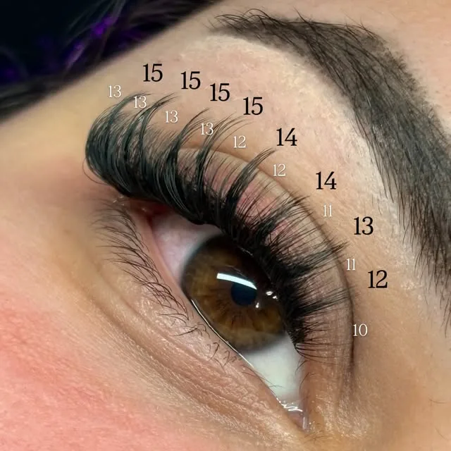
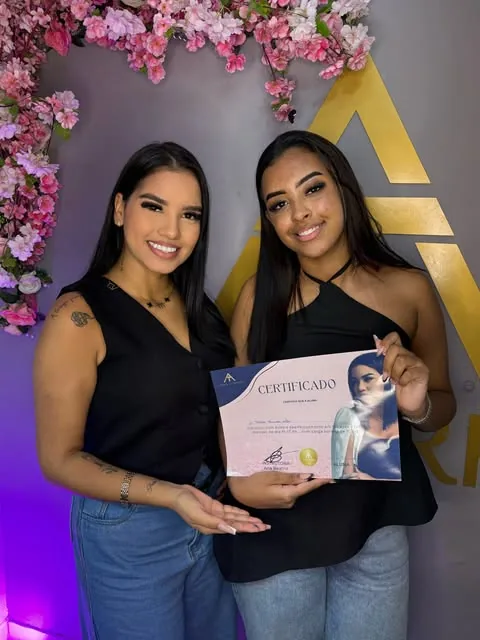
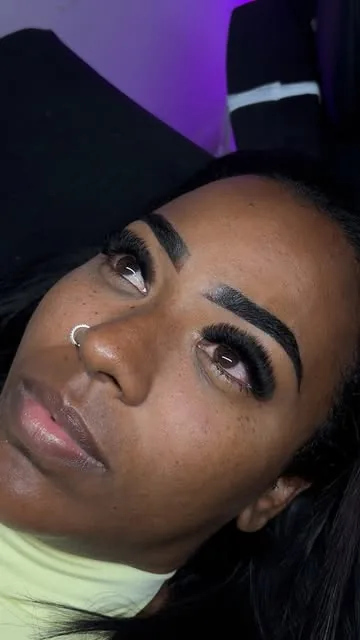

Formação Master em Extensão de Cílios
- Prática guiada
- Certificado
- Suporte real
- MapeamentoOlhar técnico
- Precisão e retençãoBase da técnica
- Experiência premiumPalestrante premiada





Conteúdo que transforma
O método
Do conhecimento
à prática profissional.
Técnica, leitura de olhar e rotina profissional para entregar resultados delicados e consistentes.
- 1Prática guiada
- 2Suporte
- 3Certificado
- 4Aplicação real
- Técnicacom direção
- Práticacom contexto real
- Carreiracom posicionamento
Quem ensina
De curvada sobre
a maca a instituto.
Do primeiro atendimento ao Instituto Ateliê: a experiência de quem transformou técnica em método.
- O inícioAnos na cadeira
Como toda profissional da área, enfrentou a barreira entre velocidade e qualidade.
- A pesquisa+5 anos de testes
Testes, treinamentos e tentativas até sistematizar a própria técnica de aplicação.
- O reconhecimentoPalestrante premiada
Palestra no Infinity Beauty Awards, um dos maiores eventos de beleza do Brasil.
- HojeInstituto Ateliê
Mentora, palestrante e educadora, com +5.000 alunas pelo mundo.
Mais que conteúdo
Uma experiência para
mudar o seu próximo passo.
-
Aluna formada
-
Conquistas
-
Experiência
-
Padrão Premium
Deslize ou use as setas
Lista de interesse
Dê o seu
próximo passo.
Receba informações sobre a Formação Master em Extensão de Cílios e seja avisado(a) quando uma nova turma abrir.
Antes de entrar na lista
Dúvidas
frequentes
Preciso ter experiência prévia?
Não. A formação foi pensada para quem está começando e também para quem já atende e quer evoluir a técnica.
A formação é presencial ou online?
Confirme com a Ana o formato da próxima turma: ela já deu aula presencial e também tem conteúdo online pelo Instituto Ateliê.
Emite certificado?
Sim, as alunas recebem certificado de conclusão ao final da formação.
Como entro na lista de interesse?
Preencha o formulário acima. A Ana (ou a equipe dela) avisa você quando a próxima turma abrir, com data, formato e valores.